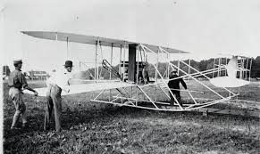

How much do you know
about airplanes?
In general - about airplanes
Who made the first airplane??? The answer to this is very simple. The era of human flight began on December 17, 1903, when Orville and Wilbur Wright successfully completed a 12-second sustained flight—the first manned flight of a powered machine.

On this day, the Wrights made two more flights, after which the father was notified by telegram about the birth of the first hero... Airplane, aeroplane — a heavier-than-air flying machine that flies with engines and fixed wings. Due to its high speed, payload and range, reliability in operation, and high maneuverability, the aircraft has become widespread compared to other aircraft. It is used for transporting passengers and cargo, as well as for military and special purposes. Civil and military aircraft are distinguished by their purpose. Civil aircraft include: transport (passenger, cargo, freight), sports, record-breaking (for setting takeoff and flight speed, altitude, distance records), tourist, administrative, training-transport, agricultural, special-purpose (for example, for rescue operations, remote-controlled) and experimental aircraft. The purpose of military aircraft is to destroy air targets, ground (sea) objects or perform other combat missions. Military aircraft are distinguished by purpose (fighter-bomber, bomber, reconnaissance: transport, communications and medical).
Civil
All non-military aircraft are civil aircraft. These include private and business jets and commercial aircraft. Private jets are private aircraft used for pleasure flying, often single-engine monoplanes with non-reversible landing gear. Private jets are private aircraft used for pleasure flying, often single-engine monoplanes with non-reversible landing gear. However, they can be very sophisticated and can include variants such as: "warbirds", former military aircraft flown for nostalgia, ranging from basic trainers to large bombers; "homebuilt", aircraft built from scratch or from kits by the owner, and ranging from simple adaptations of Piper Cubs to high-speed, streamlined four-passenger transports; Antiques and classics, restored old aircraft that fly, like warriors, out of love and nostalgia; and aerobatic aircraft designed for high maneuverability and air show performance.
AIRBUS
AIRBUS has 22 different aircraft models
AirBus A300
The Airbus A300 is Airbus' first production aircraft and the world's first twin-engine, double-decker (wide-body) airliner. It was developed by Airbus Industrie GIE, now part of Airbus SE, and was produced from 1971 to 2007. The first twin-engine wide-body airliner, the A300 typically seats 247 passengers in two classes over a range of 5,375 to 7,500 km (2,350 to 4,900 mi). Initial variants are powered by General Electric CF6-50 or Pratt & Whitney JT9D turbofans and have a flight deck for three crew. The improved A300-600 has a two-crew cabin and upgraded CF6-80C2 or PW4000 engines; it made its first flight on 8 July 1983 and entered service later that year. The A300 is the basis for the smaller A310 (first flown in 1982) and was adapted into a freighter version. Its cross-section was retained for the larger four-engine A340 (1991) and the larger twin-engine A330 (1992). It is also the basis for the larger Beluga transport (1994). Unlike most Airbus aircraft, it has a yoke and does not use a fly-by-wire system.
AirBus A310
The Airbus A310 is a wide-body aircraft designed and manufactured by Airbus Industrie GIE, a consortium of European aerospace manufacturers at the time. Airbus set a requirement for a smaller aircraft than the A300, the first twin-engine wide-body jet. The A310 (originally the A300B10) was launched on 7 July 1978 with orders from Swissair and Lufthansa. The first prototype made its maiden flight on 3 April 1982, and the A310 received its type certificate on 11 March 1983. While retaining the same eight-wing design, the A310 is 6.95 m (22 ft 10 in) shorter than the original A300 variants and has a smaller wingspan, from 260 to 219 m2 (2,800 to 2,360 sq ft). The A310 featured a two-crew glass cabin, which was later adopted for the A300-600 with a common type rating. It was powered by the same General Electric CF6-80 or Pratt & Whitney JT9D, later PW4000 turbofan jet engines. It can accommodate 220 passengers in two classes, or 240 passengers in all-economy, and has a range of up to 5,150 nautical miles (9,540 km; 5,930 mi). It has covered exits between the two main pairs of front and rear doors.
AirBus A318
The Airbus A318, nicknamed the "baby bus", is the smallest and least popular variant of the Airbus A320 family. The A318 carries 107 to 132 passengers and has a maximum range of 5,750 kilometres (3,100 nautical miles; 3,570 mi).[2] Final assembly of the aircraft took place in Hamburg, Germany. It is primarily intended for short-haul services. The aircraft shares a common type rating with all other variants of the Airbus A320 family, allowing pilots to fly all versions of the aircraft without the need for further training. It is the second largest commercial aircraft to be certified by the European Aviation Safety Agency for steep approach operations, behind the Airbus A220, which allows flights to airports such as London City.[3] The internal corporate designation, A319M5, was used as early as March 1998,[15] as an A319 derivative, with the fuselage shortened by 0.79 metres (2 ft 7 in) forward of the wing and 1.6 m (5 ft 3 in) aft.[16] The final proposal was to seat 107 passengers in a two-class configuration, with a range of 3,350 kilometres (1,810 nmi; 2,080 mi). The aircraft's construction benefited from laser welding, eliminating the need for heavy rivets and bolts.
AirBus A319
The Airbus A319 is a member of the Airbus A320 family of short- to medium-range, narrow-body, commercial passenger twin-engine jet aircraft manufactured by Airbus. Final assembly of the aircraft takes place in Hamburg, Germany and Tianjin, China. The A319 is a shortened fuselage variant of the Airbus A320 and entered service with Swissair in April 1996, approximately two years after the stretched Airbus A321 and eight years after the original A320. The aircraft shares a common type rating with all other variants of the Airbus A320 family, allowing existing A320 family pilots to fly the aircraft without the need for further training. The A319 design is a shortened fuselage of the A320, a minimally modified derivative of its 130- to 140-seat SA1, a single-aisle design.[6] The SA1 was shelved as the consortium focused on its larger siblings. Following healthy sales of the A320/A321, Airbus refocused on what was then known as the A320M-7, meaning the A320 minus the seven fuselage frames.
AirBus A320
The Airbus A320 family is a series of narrow-body aircraft designed and manufactured by Airbus. The A320 was launched in March 1984, first flew on 22 February 1987, and entered service with Air France in April 1988.[3] The first member of the family was followed by the stretched A321 (first delivered in January 1994), the short-hauled A319 (April 1996), and the shortest variant, the A318 (July 2003). Final assembly is carried out in Toulouse, France; Hamburg, Germany; Tianjin, China since 2009; and Mobile, Alabama, United States since April 2016. The Twinjet has a hexagonal fuel-efficient cross-section and is powered by CFM56-5A or -5B, or IAE V2500 turbofan engines, except for the A318. The A318 has either two CFM56-5B engines or a pair of PW6000 engines instead of the IAE V2500. The family pioneered the use of digital fly-by-wire and lateral stick flight controls in aircraft. Variants offer maximum take-off weights of 68 to 93.5 tonnes (150,000 to 206,000 lb), a range of 5,740–6,940 km; a range of 3,570–4,320 mi (3,100–3,750 nmi). The 31.4 m (103 ft) long A318 typically seats 107 to 132 passengers. The 124-156 seat A319 is 33.8 m (111 ft) long. The A320 is 37.6 m (123 ft) long and seats 150 to 186 passengers. The 44.5 m (146 ft) long A321 offers 185 to 230 seats. Airbus Corporate Jets are modified business jet versions of standard commercial variants.

AirBus A330
The Airbus A330 is a wide-body aircraft designed and manufactured by Airbus. Airbus began developing the larger A300 derivatives in the mid-1970s, resulting in the A330 twinjet, as well as the Airbus A340 quadjet, and both designs were launched with first orders in June 1987. The A330-300, the first variant, first flew on 9 January. The A330-200, a shorter-range variant, followed in 1998 with the Canada 3000 as the launch carrier. The A330 shares many underpinnings with the airframe of earlier A340 variants, notably with the same wing components and therefore the same structure. However, the A330 has two main landing gear instead of three, a lower weight and a slightly different fuselage length. Both aircraft feature fly-by-wire controls, as well as a similar glass cockpit to increase overall comfort. The A330 was Airbus' first airliner to offer a choice of three engines: the General Electric CF6, Pratt & Whitney PW4000, or Rolls-Royce Trent 700. The A330-300 has a range of 11,750 km (6,340 nmi; 7,700 passengers); the A330-200 can cover 13,450 km (7,260 nmi; 8,360 mi) with 247 passengers. Other variants include the A330-200F dedicated freighter, the A330 MRTT military tanker, and the ACJ330 corporate jet. The A330 MRTT was proposed as the EADS/Northrop Grumman KC-45 for the US Air Force's KC-X competition, but lost out to the Boeing KC-46 after winning the initial bid.
AirBus A321
The Airbus A321 is a member of the Airbus A320 family of short- to medium-range, narrow-body, twin-engine commercial passenger aircraft;[b] it carries between 185 and 236 passengers. It has a stretched fuselage, which was the first derivative of the basic A320, and entered service in 1994, approximately six years after the original A320. The aircraft shares a common type rating with other variants of the Airbus A320 family, allowing pilots of the A320 family to fly the aircraft without the need for further training. In December 2010, Airbus announced the next generation of the A320 family, the A320neo (new engine variant).[2] The similarly lengthened fuselage A321neo variant features new, more efficient engines, combined with airframe improvements and winglets (which Airbus calls Sharklets). The aircraft delivers fuel savings of up to 15%. The A321neo carries up to 244 passengers, with a maximum range of 4,000 nmi (7,400 km; 4,600 mi) for the long-haul version, carrying up to 206 passengers. Combined with airframe improvements and winglets (which Airbus calls Sharklets), the aircraft delivers fuel savings of up to 15%. The A321neo carries up to 244 passengers, with a maximum range of 4,000 nmi (7,400 km; 4,600 mi) for the long-haul version, carrying up to 206 passengers.

AirBus A220
The Airbus A220 is a family of five-aisle narrow-body aircraft manufactured by Airbus Canada Limited Partnership (ACLP). It was originally developed by Bombardier Aviation and operated for two years as the Bombardier CSeries. The program was launched on 13 July 2008. The smaller A220-100 (formerly CS100) first flew on 16 September 2013, received initial type certificate from Transport Canada on 18 December 2015, and entered service with Swiss Global Air Lines on 15 July 2016. The longer A220-300 (formerly CS300) first flew on 27 February 2015, received initial type certificate on 11 July 2016, and entered service with airBaltic on 14 December 2016. Both launch operators reported better-than-expected fuel burn and passenger transfer reliability. Powered by Pratt & Whitney PW1500G turbofan engines under the wings, the twinjet features fly-by-wire flight controls, a carbon composite wing, an aluminum-lithium fuselage, and optimized aerodynamics for better fuel efficiency. The aircraft family offers maximum takeoff weights of 63.1 to 70.9 t (139,000 to 156,000 lb) and a range of 3,450-3,600 nmi (6,390-6,670 km; 3,970-4,140 mi). The 35 m (115 ft) long A220-100 seats 108 to 133, while the 38.7 m (127 ft) long A220-300 seats 130 to 160. The ACJ TwoTwenty is the business jet version of the A220-100.

BOEING
BOEING has more than 14,000 aircraft of various types.
Boeing 707
The Boeing 707 is an early American long-haul narrow-body airliner, the first aircraft designed and manufactured by Boeing Commercial Airplanes. Developed from the Boeing 367-80 prototype, the original 707-120 first flew on December 20, 1957. Pan Am began regular service of the 707 on October 26, 1958. In versions produced until 1979, the 707 is a twin-engine, Powered by Pratt & Whitney JT3D turbofans, the 707-120B debuted in 1961 and the 707-320B in 1962. The 707-120B had a range of 6,700 km (4,100 mi) and could seat 174 in a single class. With 141 passengers in two classes, the 707-320/420 could fly 3,750 nmi (6,940 km; 4,320 mi) and the 707-320B could fly up to 5,000 nmi (9,300 nmi; 5,800 mi). The 707-320C convertible passenger-freighter model entered service in 1963, and passenger 707s were converted to freighter configuration. Military products include the E-3 Sentry airborne reconnaissance aircraft and the C-137 Stratoliner VIP transport. A total of 865 Boeing 707s were produced and delivered, including 154 Boeing 720s.
Boeing 717
The Boeing 727 is an American narrow-body airliner designed and manufactured by Boeing Commercial Airplanes. After the introduction of the heavier 707 quad-jet in 1958, Boeing addressed the demand for longer-haul flights from smaller airports. The 727 was introduced on December 5, 1960, with 40 orders from United Airlines and Eastern Air Lines. The first 727-100 entered service on November 27, 1962, first flew on February 9, 1963, and entered service with Eastern on February 1, 1964. The only trijet aircraft produced by Boeing, the 727 is powered by three Pratt & Whitney JT8D low-bypass turbofans under the T-tail, one on each side of the rear fuselage, and a central one fed into an S-duct under the tail. It shares its six-sided upper fuselage cross-section and cabin with the 707, which was also later used on the 737. The 133-foot-long (41 m) 727-100 typically carried 106 passengers in two classes on a range of 2,250 nautical miles [nmi] (4,209 km) single class. Launched in 1965, the stretched 727-200 flew in July 1967 and entered service with Northeast Airlines that December. A 20-foot (6.1 m) longer variant typically carried 134 passengers in two classes on a range of 2,550 nmi (4,720 km; 2,930 mi) or 155 in single class. A freighter and "quick-change" convertible version was also offered.
Boeing 737
The Boeing 737 is an American narrow-body airliner manufactured by Boeing at its Renton, Washington, facility. Designed to complement the Boeing 727 on short and narrow-haul routes, the twinjet retained the 707's fuselage width and six-seat layout, but was powered by two Pratt & Whitney JT8D low-bypass turbofan engines. Conceived in 1964, the original 737-100 made its first flight in April 1967 and entered service with Lufthansa in February 1968. The extended 737-200 entered service in April 1968 and has evolved over four generations, offering several variants seating from 85 to 215 passengers. The first-generation 737-100/200 variants were powered by Pratt & Whitney JT8D low-bypass turbofan engines and offered seating for 85 to 130 passengers. The second-generation 737 Classic -300/400/500 variants, introduced in 1980 and introduced in 1984, were upgraded with fuel-efficient CFM56-3 high-bypass turbofans and offered 110 to 168 seats. The third-generation 737 Next Generation (NG) -600/700/800/900 variants, introduced in 1997, were upgraded with CFM56-7 high-bypass turbofans, a larger wing and an updated glass cabin, and accommodated 108 to 215 passengers. The fourth and latest generation, the 737 MAX -7/8/9/10 variants, powered by improved CFM LEAP-1B high-bypass turbofans and seating 138 to 204 people, entered service in 2017. Boeing Business Jet versions are derived from both the 737NG and military models.
Boeing 747
The Boeing 747 is a long-haul wide-body airliner designed and manufactured by Boeing Commercial Airplanes in the United States from 1968 to 2023. Following the introduction of the 707 in October 1958, Pan Am wanted an aircraft 2+1⁄2 times its size to reduce the cost of its seats. In 1965, Joe Sutter left the 737 development program to design the 747. In April 1966, Pan Am ordered 25 Boeing 747-100 aircraft, and in late 1966, Pratt & Whitney agreed to develop the JT9D engine, a high-bypass turbofan. On September 30, 1968, the first 747 rolled off the custom-built Everett Plant, the largest building in the world by volume. The 747's first flight took place on February 9, 1969, and the 747 was certified in December of that year. It entered service with Pan Am on January 22, 1970. The 747 was the first aircraft to be called a "Jumbo Jet," as it was the first wide-body aircraft.
Boeing 757
The Boeing 757 is an American narrow-body airliner designed and built by Boeing Commercial Airplanes. The then-designated 7N7, the twinjet successor to the 727, received its first orders in August 1978. The prototype completed its first flight on February 19, 1982, and received FAA certification on December 21, 1982. Eastern Air Lines placed the initial 757-200 variant into commercial service in January 1987. The freighter (PF) variant entered service in September 1987, and the combi model in September 1988. The stretched 757-300 was introduced in September 1996 and entered service in March 1999. After 1050 were built for 54 customers, production ended in October 2004, and in October 2004 the largest variation or Boe7 was offered. -200.
Boeig 767
The Boeing 767 is an American wide-body airliner designed and manufactured by Boeing Commercial Airplanes. The aircraft was launched on July 14, 1978, as part of the 7X7 program, with the prototype first flying on September 26, 1981, and certified on July 30, 1982. The original 767-200 variant entered service on September 8, 1982, with United Airlines as 2,904 and the extended-range 767-200. It was extended to the 767-300 in October 1986, followed by the extended-range 767-300ER in 1988, the most popular variant. The 767-300F, a production freighter version, debuted in October 1995. It was stretched again to a 767-400ER from September 2000.
Boeing 777
The Boeing 777, commonly referred to as the Triple Seven, is an American long-range wide-body airliner designed and manufactured by Boeing Commercial Airplanes. The 777 is the world's largest twinjet and the most widely produced wide-body airliner. The aircraft was designed to fill the gap between Boeing's other wide-body aircraft, the twin-engine 767 and the four-engine 747, and to replace the aging DC-10 and L-1011 trijets. Developed in consultation with eight major airlines, the 777 program was launched in October 1990 with an order from United Airlines. The aircraft prototype was rolled out in April 1994 and first flew that June. The 777 joined United Airlines as the launch operator in June 1995. Longer-range variants were introduced in 2000 and first delivered in 2004. The Triple Seven can accommodate ten seating configurations and has a typical 3-class capacity of 301 to 368 passengers, with a range of 5,240 to 8,555 nautical miles (9,700 to 15,840 km; 6,0840 to 9,000 km). The aircraft is known for its large-diameter turbofan engines, wingtips, six wheels on each main landing gear, a fully circular fuselage cross-section, and a knife-edge tail cone. The 777 became Boeing's first aircraft to use fly-by-wire controls and to use carbon composite structures in the tailplanes.
Boeing 787
The Boeing 787 Dreamliner is an American wide-body airliner designed and manufactured by Boeing Commercial Airplanes. After the cancellation of the unconventional Sonic Cruiser project, Boeing announced the conventional 7E7 on January 29, 2003, which was primarily focused on efficiency. The program began on April 26, 2004, with an order for 50 aircraft from All Nippon Airways (ANA), with a target of 2008 introduction. On July 8, 2007, a prototype 787 without major operating systems was released; the aircraft subsequently experienced numerous delays before its first flight on December 15, 2009. The type certificate was received in August 2011, and the first 787-8 was delivered in September 2011 and entered commercial service on October 26, 2011, with ANA.
_(cropped).jpg)
Military
Combat aircraft are aircraft designed to destroy targets with artillery, missile and bomber weapons, as well as to conduct aerial reconnaissance and electronic warfare. Combat aircraft include fighters, fighter-bombers, fighter-interceptors, bombers, anti-ship aircraft, fighters, reconnaissance aircraft and electronic warfare aircraft.
Military aircraft
Warships have existed for a very long time, but these are ships that are more often used in battle than ships.
B-2
The Northrop Grumman B-2 Spirit (also known as the Stealth Bomber) is an American heavy bomber, based on stealth technology, designed to penetrate enemy air defenses and deploy both conventional and nuclear weapons. Due to its significant capital and operating costs, the project caused ambivalence among Congress and the Joint Chiefs of Staff. During the late 1980s and early 1990s, Congress reduced the original plan for 132 bombers to 21. The average cost of each aircraft is $737 million (in 1997 dollars).[3] The full cost of each such aircraft is $929 million, including spare parts, equipment, upgrades, and software.[3] The total cost of the program, which includes engineering, development, and testing, averages $2.1 billion per aircraft (1997).
F-15
The McDonnell Douglas (now Boeing) F-15 Eagle is a twin-engine, all-weather tactical fighter designed to gain air superiority. It is considered one of the most successful modern fighters, having flown over more than 100 air battles without losing a single one.[2][3] After reviewing proposals, the United States Air Force selected the McDonnell Douglas design in 1967 to meet its requirements for an air superiority fighter. The Eagle first flew in July 1972 and entered service in 1976. The United States Air Force plans to keep the F-15 in service until 2025.[4] Since the 1970s, the Eagle has been exported to Israel, Japan, and Saudi Arabia. Although the F-15 was originally intended as an air superiority fighter, it has proven its design flexibility to conduct all-weather combat. An improved variant, the F-15E Strike Eagle, was later developed and entered service in 1989.
F-117
The Lockheed F-117 Nighthawk is a stealth fighter aircraft used by the United States Air Force. The F-117A first flew in 1981 and achieved initial operational capability in October 1983.[1] The F-117A was certified and made its world debut in November 1988.[4] The F-117 Nighthawk, a product of the Skunk Works development of the Have Blue technology demonstrator, was the first operational stealth aircraft to be built. The F-117A became widely known during the 1991 Gulf War. The United States Air Force retired the F-117 on 22 April 2008,[2] largely due to the introduction of the F-22 Raptor[5] and plans to adopt the F-35 Lightning II in the future.
F-15E
The McDonnell Douglas F-15E Strike Eagle is an American all-weather fighter-bomber. It was designed in the 1980s to cover long distances at high speed without escort or electronic warfare. The Strike Eagle, which is derived from the F-15 Eagle air superiority fighter, proved its worth in Operation Desert Storm and Operation Allied Force, delivering heavy strikes against enemy strategic targets, conducting air patrols, and providing close air support to allied forces. It has also participated in subsequent conflicts and has been exported to several countries. The United States Air Force's F-15E Strike Eagles can be distinguished from other US Eagle variants by their dark camouflage and conformal fuel tanks mounted alongside the engines.
F-16
The F-16 Fighting Falcon (translated as: F-16 Fighter Sherman) is a multirole jet fighter aircraft originally developed by General Dynamics for the United States Air Force. Designed as a light, day fighter, it has been a successful multirole aircraft. More than 4,400 aircraft have been produced since its initial introduction and was refined in 1976.[2] Although the United States Air Force no longer purchases these models, improved versions are still produced for export. In 1993, General Dynamics sold its aircraft manufacturing business to Lockheed Corporation,[3] which in turn became part of Lockheed Martin after it was acquired by Martin Marietta in 1995.[4]
F-35
The Lockheed Martin F-35 Lightning II is a single-seat, single-engine, fifth-generation multirole fighter aircraft currently in development. It is designed for attack, reconnaissance, and air defense missions using stealth technology.[10] The F-35 has three main models: the first is designed for short takeoff and landing, the second for vertical takeoff and landing, and the third is designed specifically for aircraft carriers. The F-35 is derived from the Lockheed Martin X-35, which in turn is a product of the Joint Strike Fighter (JSF) program. The JSF program is implemented by the United States government, with additional funding from the governments of the United Kingdom and several other countries. Partner countries are either NATO members or U.S. allies. The F-35 made its first flight on 15 December 2006.
F-22
The F-22 Raptor is a single-seat, twin-engine stealth fifth-generation fighter jet manufactured by Lockheed Martin, designed to replace the F-15 Eagle, which was introduced in the 1980s. It entered service with the United States in the 2000s, with only 187 F-22s ordered. Exports are prohibited, although Japan, Israel, and Australia have expressed interest. On December 20, 2004, an F-22 crashed shortly after takeoff from Nellis Air Force Base. The pilot ejected and survived.[1] On March 25, 2009, an F-22 crashed approximately 10 km (6 mi) from Edwards Air Force Base. The pilot was not a member of the U.S. Air Force. He worked for Lockheed. He died
FA-18C
The McDonnell Douglas (now Boeing) F/A-18 Hornet is a twin-engine supersonic multi-role fighter aircraft that can be used in all weather conditions. The F/A-18 is designed to destroy both air and ground targets (the abbreviation F/A stands for Attack, and the F stands for Fighter, respectively). The US Navy still uses this aircraft on aircraft carriers. The US Navy's Blue Angels have been flying these aircraft since 1986. They played a crucial role in the Persian Gulf War of 1990-1991. They destroyed enemy aircraft and bombed targets. In 2002, the more advanced F/A-18E/F Super Hornet entered service. The first aircraft carrier to receive the new aircraft was the USS Abraham Lincoln. It is larger, has more powerful engines, and is more versatile in its armament. In 2003, the Super Hornet participated in the preparations for the Iraq War. The F/A-18 is one of the best multi-role aircraft in the world.
Cargo airplanes
A cargo aircraft (also known as a freighter, freighter, airship, or cargo plane) is a fixed-wing aircraft designed or modified to carry cargo rather than passengers. Such aircraft typically have one or more large doors for loading cargo. Passenger amenities are removed or not installed, although basic comforts for the crew, such as a galley, lavatory, and storage, are typically provided in larger aircraft.[1] Freighters may be operated by civil passenger or cargo airlines, private individuals, or by government agencies of individual countries, such as the armed forces. Aircraft designed for cargo flights usually have features that distinguish them from conventional passenger aircraft: a wide/tall fuselage cross-section, high wings to accommodate the cargo area close to the ground, multiple landing gears that allow it to land in unprepared areas, and a high-mounted tail that allows cargo to be loaded directly into and out of the aircraft.
There are military cargo ships and there are also experimental cargo ships.
Military cargo airplanes
There are 22 military cargo ships in total, but these are the most frequently used ships.
An-12
The Antonov An-12 (Russian: Антонов Ан-12; NATO reporting name: Cub) is a four-engine turboprop transport aircraft designed in the Soviet Union. It is the military version of the Antonov An-10 and has many variants. For more than three decades, the An-12 was the standard medium-range cargo and amphibious transport aircraft of the Soviet Air Force. A total of 1,248 aircraft were built. Developed from the Antonov An-8, the An-12 was the military version of the An-10 passenger transport. The first prototype An-12 flew in December 1957 and entered Soviet military service in 1959. Initially, the aircraft was produced at the State Aviation Plant in Irkutsk, Siberia. From 1962, production moved to Tashkent, where 830 were built. Later, production moved to Voronezh and Kazan.
An-124
The Antonov An-124 Ruslan (Russian: Антонов Ан-124 Руслан; Ukrainian: Ан-124 Руслан, lit. "Ruslan (meaning "lion")"; NATO reporting name: Condor) is a large, strategic aircraft carrier, four-engine aircraft developed in the 1980s by the Soviet Union's AnnovSSR design bureau. (USSR). The An-124 is the world's second-heaviest gross weight production cargo aircraft and the heaviest operational cargo aircraft, behind the destroyed single-engine Antonov An-225 Mriya (a greatly enlarged design based on the An-124).[4] The An-124 remains the largest military transport aircraft in service.[5] In 1971, design work began at the Antonov Design Bureau on a project, initially called Izdeliye 400 (Product #400), in response to a shortage of heavy aviation capabilities within the Military Transport Aviation Command (Komandovaniye voyenno-transportnoy aviatsii or VTA Forces).
C27J
The Alenia C-27J Spartan[3] is a military transport aircraft developed and manufactured by Leonardo's aeronautical division (formerly Alenia Aermacchi until 2016).[4] It is an advanced derivative of the former Alenia Aeronautica G.222 (C-27A Spartan in US service), equipped with engines and various systems also used on the larger Lockheed Martin C-130J Super Hercules. In addition to the standard transport configuration, specialized variants of the C-27J have been developed for maritime patrol, search and rescue, C3 ISR (command, control, communications, intelligence, surveillance and reconnaissance), fire support/ground attack and electronic warfare missions.
An-26
The Antonov An-26 (NATO reporting name: Curl) is a twin-engine turboprop civil and military transport aircraft, designed and produced in the Soviet Union from 1969 to 1986.[2] It is the third member of the Antonov An-24 family, following the An-24 and An-30, and preceding the An-32 and the cancelled An-132. Although the An-24T tactical transport was successful in supporting Soviet troops in harsh terrain, its ventral loading hatch restricted the handling of cargo and especially vehicles, and made it less effective than expected for parachuting personnel and supplies.[3] As a result, interest in a version with a payload capacity increased, and the Antonov Design Bureau decided in 1966 to begin development of a new An-26 derivative, ahead of an official order.
An-22
The Antonov An-22 "Antei" (Russian: Ан-22 Антей, romanized: An-22 Antey;[1] lit. 'Antaeus'; NATO reporting name: "Cock") is a heavy military transport aircraft designed in the Soviet Union by the Antonov Design Bureau. Powered by four turboprop engines, each driving a pair of counter-rotating propellers, the design was the first wide-body transport aircraft and remains the world's largest turboprop-powered aircraft. The An-22 made its first public appearance outside the Soviet Union at the 1965 Paris Air Show. The model subsequently saw widespread use in major Soviet military and humanitarian aircraft, and is still in service with the Russian Aerospace Forces.
An-225
The Antonov An-225 Mriya (Ukrainian: Антонов Ан-225 Мрія, lit. 'dream' or 'inspiration'; NATO reporting name: Cossack) was a large strategic aviation cargo aircraft designed and manufactured in the Soviet Union by the Antonov Design Bureau. It was originally designed in the 1980s as an enlarged derivative of the Antonov An-124 airlifter for transporting the Buran spacecraft. The An-225 made its maiden flight on 21 December 1988; only one aircraft was completed, although a second aircraft with a slightly different configuration was partially built. After a brief period of use in the Soviet space program, the aircraft was scrapped in the early 1990s.
 (1).jpg)
C-17
The McDonnell Douglas/Boeing C-17 Globemaster III is a large military transport aircraft developed for the United States Air Force (USAF) in the 1980s and early 1990s by McDonnell Douglas. The C-17 is named after two previous piston-engine military cargo aircraft, the Douglas C-74 Globemaster and the Douglas C-124 Globemaster II. The C-17 is based on the YC-15, a smaller prototype designed in the 1970s. It was designed to replace the Lockheed C-141 Starlifter and also to perform some of the duties of the Lockheed C-5 Galaxy. The redesigned aircraft differs from the YC-15 in that it is larger and has wider wings and more powerful engines. Development was delayed by a number of design issues, which caused the company to incur losses of almost US$1.5 billion during the development phase of the program. On September 15, 1991, about a year behind schedule, the first C-17 made its maiden flight. The C-17 officially entered USAF service on January 17, 1995. McDonnell Douglas, and later Boeing after its merger with McDonnell Douglas in 1997, produced the C-17 for more than two decades. The final C-17 was completed at a factory in Long Beach, California, and flew in November 2015.
A400M
The Airbus A400M Atlas[nb 1] is a European four-engine turboprop military transport aircraft. It was developed by Airbus Military, now Airbus Defence and Space, as a tactical aircraft with strategic capabilities to replace older transport aircraft such as the Transall C-160 and Lockheed C-130 Hercules.[3] The A400M is the size of the C-130 and Boeing C-17 Globemaster III. It can carry heavier payloads than the C-130 and can use rough landing strips. In addition to its transport capabilities, the A400M can perform aerial refueling and medical evacuation with appropriate equipment.
Experimental cargo airplanes
There are a lot of experimental cargo ships. The UK has the most of them, and they use these ships to conduct various experiments.
X-1
The Bell X-1 (Bell Model 44) is a rocket-powered aircraft, originally designated the XS-1, and was a Joint National Advisory Committee on Aeronautics–United States Army Air Forces–United States Air Force supersonic research project built by Bell Aircraft. Conceived in 1944 and designed and built in 1945, it reached speeds of nearly 1,000 miles per hour (1,600 km/h; 870 kn) in 1948. The same design was followed by the Bell X-1A, which had a greater fuel capacity and therefore a longer rocket burn time, reaching 10,600 km/h (1,400 kn) in 1954.[1] X-1 aircraft #46-062, nicknamed Glamorous Glennis and flown by Chuck Yeager, was the first manned aircraft to exceed the speed of sound in level flight and was the first of the X-planes, a series of American experimental rocket aircraft (and non-rocket aircraft) designed to test new technologies.
X-2
The Bell X-2 (nicknamed "Starbuster"[1]) was an X-plane research aircraft designed to investigate flight characteristics in the Mach 2–3 range. The X-2 was a rocket-powered, winged research aircraft developed in 1945 by Bell Aircraft Corporation, the United States Army Air Forces, and the National Advisory Committee for Aeronautics (NACA) to study the aerodynamic problems of supersonic flight and to extend the speed and altitude capabilities of the earlier X-1 series of aircraft. The Bell X-2 (nicknamed "Starbuster"[1]) was an X-plane research aircraft designed to investigate flight characteristics in the Mach 2–3 range. The X-2 was a rocket-powered, winged research aircraft developed in 1945 by Bell Aircraft Corporation, the United States Army Air Forces, and the National Advisory Committee for Aeronautics (NACA) to study the aerodynamic problems of supersonic flight and to extend the speed and altitude capabilities gained from the earlier X-1 series of aircraft.
X-3
The Douglas X-3 Stiletto was a 1950s United States experimental jet aircraft with a thin fuselage and long swept nose, manufactured by the Douglas Aircraft Company. Its primary mission was to investigate the design characteristics of an aircraft suitable for sustained supersonic speeds, which included the first use of titanium in major aircraft components. Douglas designed the X-3 with a top speed of approximately 2,000 mph (3,200 km/h),[2] but it was severely limited for this purpose, and could not even exceed Mach 1 in level flight.[3] Although the research aircraft was disappointing, Lockheed designers used data from the X-3 tests for the Lockheed F-104 Starfighter, which used a similar trapezoidal wing design in its successful Mach 2 fighter.

X-4
The Northrop X-4 Bantam is a prototype of a small twin-engine jet aircraft developed by the Northrop Corporation in 1948. It lacked horizontal tail surfaces, instead relying on elevator and aileron control surfaces (called elevons) to control and maneuver, almost exactly the same format as the Mess. of the Luftwaffe. Some aerodynamicists suggested that eliminating the horizontal tail would also eliminate stability problems at high speeds (called shock stall) caused by the interaction of supersonic shock waves from the wings and horizontal stabilizers. The idea had merit, but the flight control systems of the time prevented the X-4 from achieving any success.
X-5
The Bell X-5 was the first aircraft to be capable of changing wing sweeps. It was inspired by the German company Messerschmitt's wartime P.1101 design. Further developing the German design, which could only adjust the angle of its wings on the ground, Bell engineers developed a system of electric motors to adjust the flight in flight. The Messerschmitt P.1101 V1 prototype was captured by United States forces in April 1945 from an experimental facility in Oberammergau, Germany. It was returned to the United States and eventually delivered to Bell Aircraft's factory in Buffalo, New York. Although incomplete and damaged in transit, the company's engineering staff carefully studied the design.[1] The P.1101 had wings that could be adjusted on the ground to 30, 40, and 45 degrees. However, this was only for testing and was never intended as an operational feature.[2] The Bell team, led by chief designer Robert J. Woods, submitted a proposal for a similar design, but with the ability to adjust the wing in flight.
X-6
The Convair X-6 was an experimental aircraft project to develop and evaluate a nuclear-powered jet aircraft. Experiments were conducted on a test aircraft called the Convair NB-36H, based on the B-36 bomber. The program was canceled before the actual X-6 and its nuclear reactor engines were completed. The X-6 was part of a larger series of programs that lasted from 1946 to 1961 and cost $7 billion. The basic idea was that nuclear-powered strategic bombers would be able to stay airborne for weeks because their range would not be limited by liquid jet fuel. In May 1946, the United States Army Air Forces began the Nuclear Energy for Propulsion of Aircraft (NEPA) project. Research under this program continued until May 1951, when NEPA was replaced by the Aircraft Nuclear Propulsion (ANP) program. The ANP program included plans for Convair to modify two B-36s under Project MX-1589. One of the B-36s was to be used to study the shielding requirements of an aircraft reactor, while the other became the X-6.
X-7
The Lockheed X-7 (pronounced "Flying Furnace Tube") was a 1950s American unmanned testbed for ramjet engines and missile guidance technology. It was the basis for the later Lockheed AQM-60 Kingfisher, a system used to test American air defenses against nuclear missile attack. Early development Development of the Kingfisher first began in December 1946. The X-7 was brought into production by the United States Air Force's requirement for an unmanned test aircraft with a maximum speed of at least Mach 3 (3,200 km/h; 2,000 mph).

x-15
The North American X-15 is a hypersonic rocket plane operated by the United States Air Force and the National Aeronautics and Space Administration (NASA) as part of the X-plane series of experimental aircraft. The X-15 set speed and altitude records in the 1960s, crossed the threshold of space, and returned with valuable data used in the design of aircraft and spacecraft. The X-15's top speed, 4,520 miles per hour (7,274 km/h; 2,021 m/s),[1] was achieved on October 3, 1967,[2] when William J. Aman set the official world record for the highest speed ever achieved by a manned, powered aircraft, which remains unbroken.